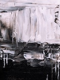
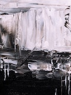

Exhibtion of Haunting Surrealism
Francine Haroldsen
Welcome to Surreal Psyche Studios' Home Page! Check out our current products and projects in the making. If you are new to our work, we specialize in haunting surrealistic art pieces. Francine Haroldsen found this art style the most compelling to her. She has created both incredible pieces and an amazing community of peers with the same artistic tastes. In doing so, she gives her audience and all that come across her work a glimpse into a different kind of world. One that could be whatever you perceive it to be. Although her works' subjects lean towards horror and the macabre, she also depcits underlying meanings within her work to create a balance of both the light and the dark. She feels it helps her acknowledge her own feelings and emotions withing herself. Her hope is to create pieces that help others not feel alone in some of the darkest moments in their lives.